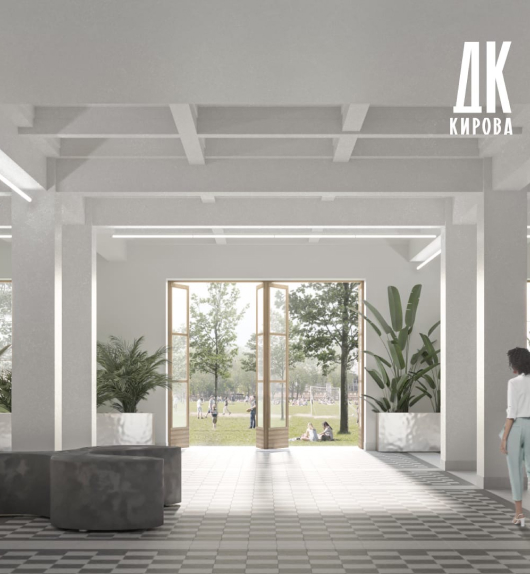

О нас
новая концепция
Более десяти лет международный некоммерческий фестиваль в сфере культуры и искусства «Недели Северных стран», посвященный теме добрососедских отношений, воплощает в жизнь свою главную идею: чем больше мы знаем о своих соседях, об их историческом и культурном наследии, о современных достижениях и образе жизни, семейных традициях. Более десяти лет международный некоммерческий фестиваль в сфере культуры и искусства «Недели Северных стран», посвященный теме добрососедских отношений, воплощает в жизнь свою главную идею: чем больше мы знаем о своих соседях, об их историческом и культурном наследии, о современных достижениях и образе жизни, семейных традициях. Более десяти лет международный некоммерческий фестиваль в сфере культуры и искусства «Недели Северных стран», посвященный теме добрососедских отношений, воплощает в жизнь свою главную идею: чем больше мы знаем о своих соседях, об их историческом и культурном наследии, о современных достижениях и образе жизни, семейных традициях.
«Недели Северных стран», посвященный теме добрососедских отношений, воплощает в жизнь свою главную идею: чем больше мы знаем о своих соседях, об их историческом и культурном наследии, о современных достижениях и образе жизни, семейных традициях. Более десяти лет международный некоммерческий фестиваль в сфере культуры и искусства «Недели Северных стран», посвященный теме добрососедских отношений, воплощает в жизнь свою главную идею: чем больше мы знаем о своих соседях, об их историческом и культурном наследии, о современных достижениях и образе жизни, семейных традициях.
